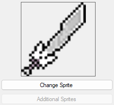
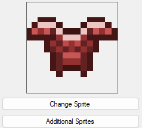
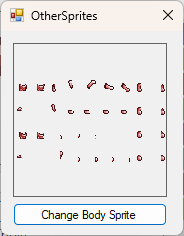
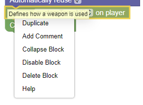
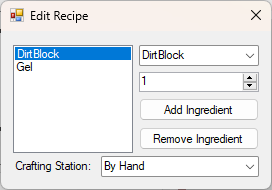

Some items only have one sprite that is displayed everywhere.
The "Additional Sprites" button will be greyed out in this case.
The all sprites must be set before exporting the mod.

Other items have multiple sprites that must be set, to define things like how they appear when equipped.
If they do, the "Additional Sprites" button will be available.

When you press the button, you will be able to see what sprite is needed, and what it looks like.
Be aware that some items may require a very specific sprite layout.

Code is editable in the main Blockly window.
Some Blocks may require an item name to be inputted. Right clicking these blocks and pressing "Help" will take you to a list of IDs.
Additionally, hovering over any block will show a tool tip.

Pressing the "Edit Recipe" button will open the recipe editor.
Here, items can be added to the recipe, and the in game crafting station needed can be specified.
